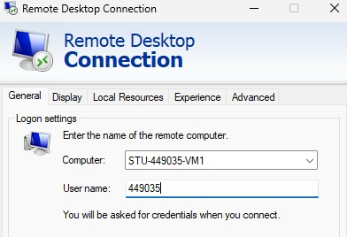
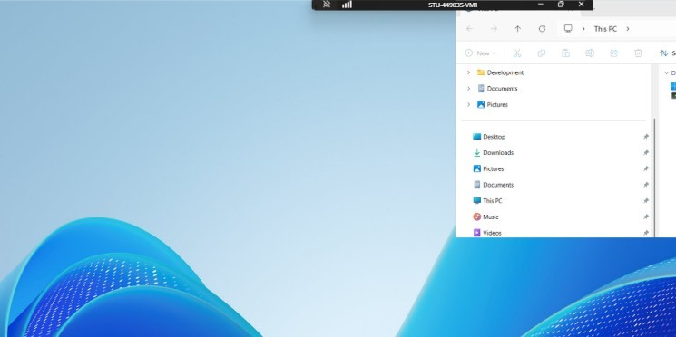
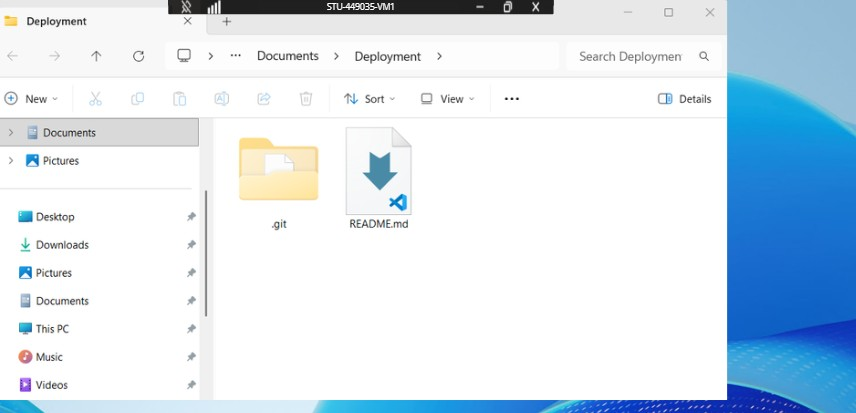
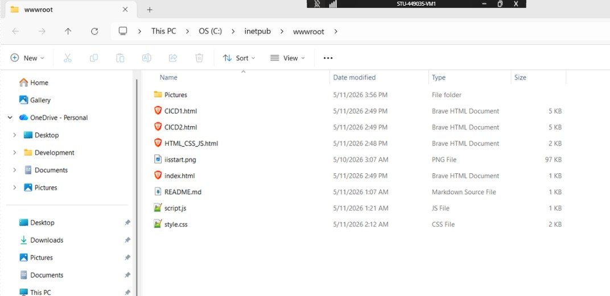
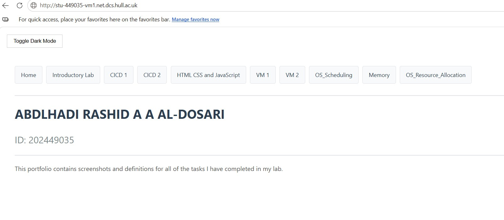
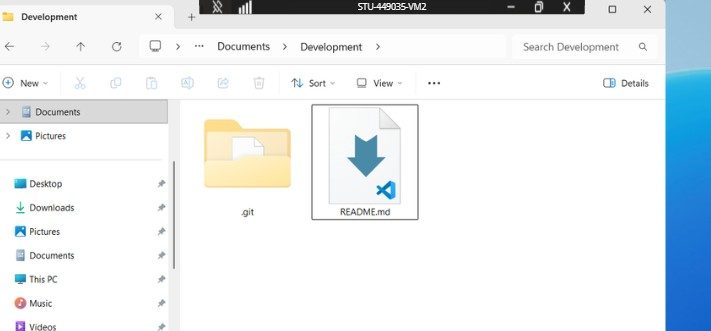
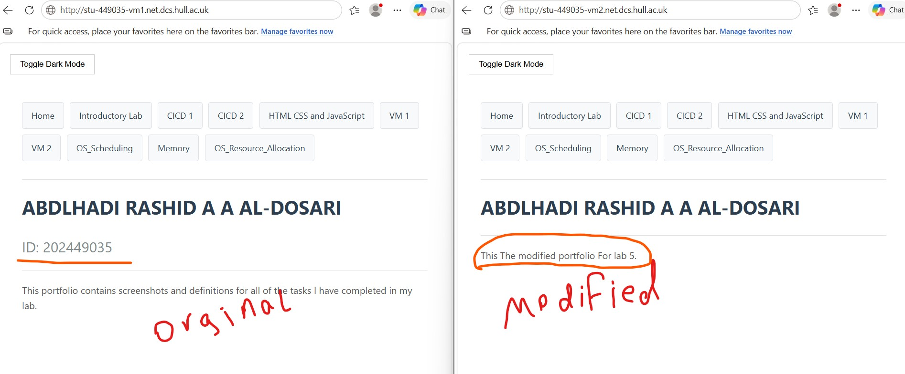

Lab Overview
In this lab, I accessed two virtual machines: STU-449035-VM1 (deployment) and STU-449035-VM2 (development) using Remote Desktop Connection. After installing Git, I cloned my portfolio onto both VMs. I set up IIS to host my website from the wwwroot folder, making it live at http://stu-449035-vm1.net.dcs.hull.ac.uk. On VM2, I installed VS Code, made a change to my site, and saved it with admin permissions. I then viewed the updated version on VM2's URL. This showed me why having separate development and deployment servers is useful for testing changes safely before going live.
Section 1: Accessing and Setting Up the VM
To move our portfolio to a dedicated server, we utilized Remote Desktop Protocol (RDP). I connected to my assigned virtual machine, STU-449035-VM1, via the Remote Desktop Connection app. After logging in with my university credentials, I accessed the Windows Server environment. I then verified the Git installation. Since it was not present, I installed it manually, ensuring the default branch was set to main. Finally, I created a Deployment folder and cloned my portfolio repository directly into the VM environment..



Section 2: Hosting with Internet Information Services (IIS)
We used IIS (Internet Information Services) to host the site live. I verified that the w3svc (World Wide Web Publishing Service) was active using the Get-Service command in the terminal. I navigated to C:\inetpub\wwwroot, moved the default placeholder files to the desktop, and copied my portfolio files into the directory. Because our main file is named index.html, the IIS server automatically served it as the primary landing page.

Opened http://stu-449035-vm1.net.dcs.hull.ac.uk from the main device (No VMs).

Section 3: Setting Up a Development VM
I repeated the setup on a second virtual machine, STU-449035-VM2, which serves as my Development environment. On this machine, I created a Development folder for the repository. This setup allows us to separate our "live" site from our "work-in-progress" code.

Section 4: Editing and Permissions
I installed Visual Studio Code on the Development VM to make live changes. I opened the files from the wwwroot folder and modified the background color and text. Since wwwroot is a protected system folder, I utilized the "Retry as Admin" prompt to save my changes successfully.
Finally opened the two websites on my device without using any VMs.
